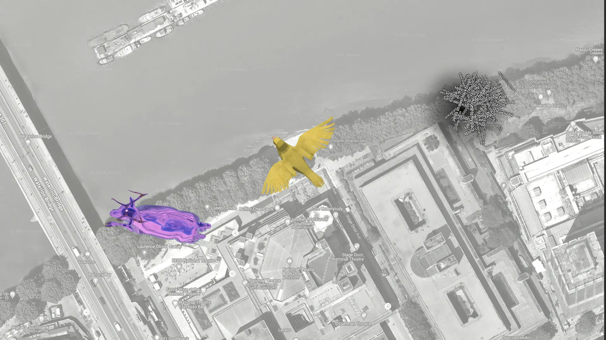

Map Marker
Meadow allows you to create site-specific experiences that are placed on a map. To show your experience on the map you can upload a custom map marker, that can be anything from a simple icon to a 3D model.

Create a Map Marker using an image
- Create a new folder in your project, outside of your main experience folder.
- Assign this folder to a new Asset Bundle, call it e.g. yourprojectnamemapmarker or whatever you want. The name does not mater, but avoid dashes or special characters as these are not allowed in the Asset Bundle name.
- Create an empty GameObject in your scene.
- As a child to this GameObject, create a quad facing upwards.
- Move it up a bit so it’s not intersecting with the map itself, which is at 0.
- Import the icon you want to use to your project.
- Assign this as the texture on a new material.
- Assign this material to the quad.
- Drag the empty gameobject to your Map Marker folder in the project view to create a prefab.
- Use Meadow Studio to upload your Map Marker to your experience.
Create a Map Marker using a 3D model
- Follow step 1-3 in the previous section.
- Import your 3D model.
- Drag it to the scene as a child of the empty GameObject.
- Position and scale it as you want it to appear on the map. Don’t make it too big or too small. A good size is between 1 and 2 meters.
- Get creative and add in any fun animations, reflections, or particle effects you’d like! Bear in mind if you are using a particle effect, the scaling mode must be set to hierarchy to work properly.
- Assign the tag
MapMarkerto your empty GameObject. This is for the system to know that this is the prefab that should be used as the marker. - Follow step 9-11 in the previous section.